Префектура Исикава · Канадзава · еда
Кухня Кага: обед в рётэе Канадзавы как музей, который можно съесть
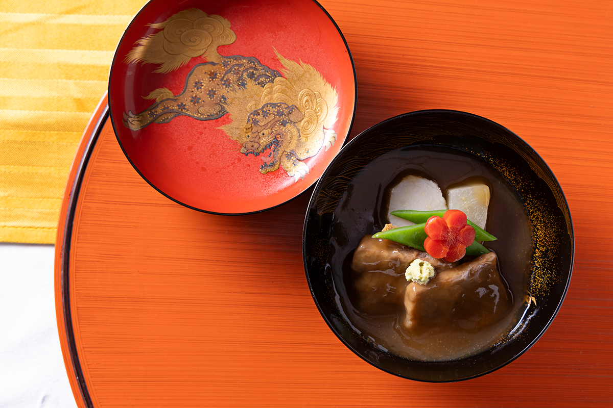
В Канадзаве обед в старом ресторане складывается из еды, лака, фарфора, свитков и цвета стен. Японцы называют кухню Кага цельным искусством, и в декабре 2025 года государство внесло её в реестр нематериального культурного достояния.
Что это
Кухня, выросшая в княжестве
Кухня Кага, или кага-рёри, родилась в префектуре Исикава, на землях бывшего княжества Кага. В эпоху Эдо (1603–1868) княжеством правил дом Маэда, а доход княжества считали в рисе и оценивали в миллион коку. Отсюда и выражение «Кага в миллион коку», которым до сих пор описывают пышность здешней жизни.
Основой кухни стали продукты гор и моря, а сложилась она в кругу князей и самураев. Влияние шло и из Киото, с его буддийской и придворной культурой. Князья по закону о поочерёдном присутствии регулярно жили в Эдо, нынешнем Токио, и привозили оттуда столичные вкусы. Из всего этого и сложилась своя, ни на что не похожая кухня.
Само название «кага-рёри» первым, как считается, сделал известным Кэнъити Ёсида (1912–1977), писатель и знаток еды, старший сын премьер-министра Сигэру Ёсиды (1878–1967). Но в книге писательницы Кахо Миякэ (1868–1944), связанной с Исикавой, сказано, что этим словом пользовались ещё в эпоху Тайсё (1912–1926).
Без местной посуды эта кухня немыслима. Блюда подают на ярко расписанных тарелках Кутани-яки и в чашах лака Вадзима-нури с золотым рисунком макиэ и гравировкой тинкин. Художнику и гурману Росандзину Китаодзи (1883–1959), который был связан и с Канадзавой, приписывают фразу: «Посуда это кимоно для еды». Дом Маэда веками поддерживал ремёсла и мастеров, поэтому именно в Исикаве еду есть во что одеть.
Гостя встречают и посуда, и парадные комнаты, и утварь, и ухоженный сад: всё вместе. Посмотрим, из чего складывается кухня Кага.
Меню
Самураи с кухонным ножом
Сцена, на которой живёт кухня Кага, это рётэй, традиционный ресторан с отдельными комнатами. Старые рётэи хранят историю кухни в Канадзаве и по всей префектуре.
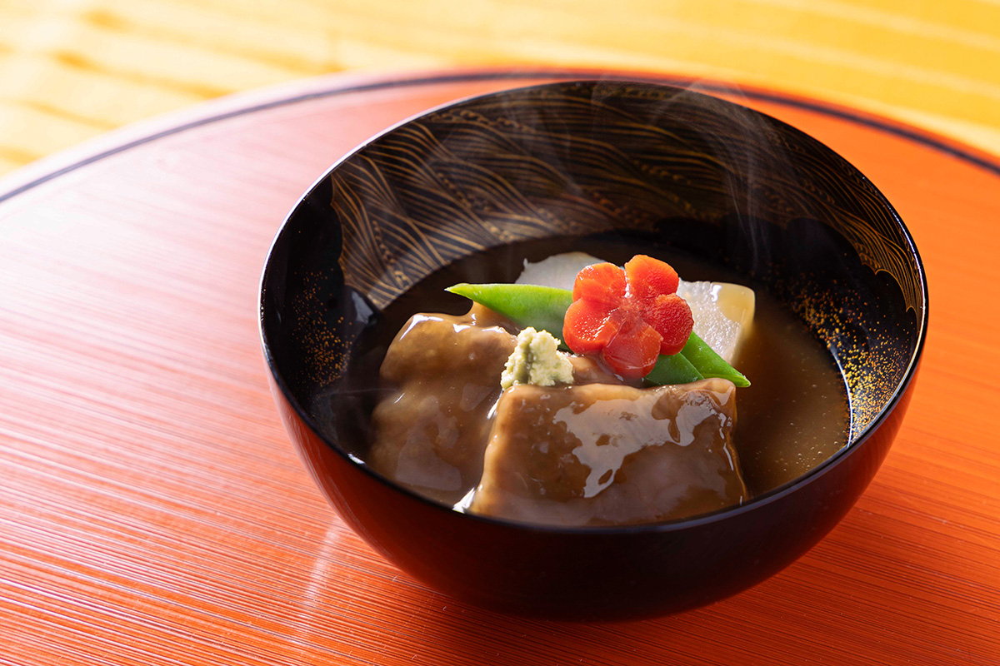
«В княжестве Кага служили хотё-самураи: они сменили меч на кухонный нож и стали поварами», рассказывает хозяин Kinjohro.
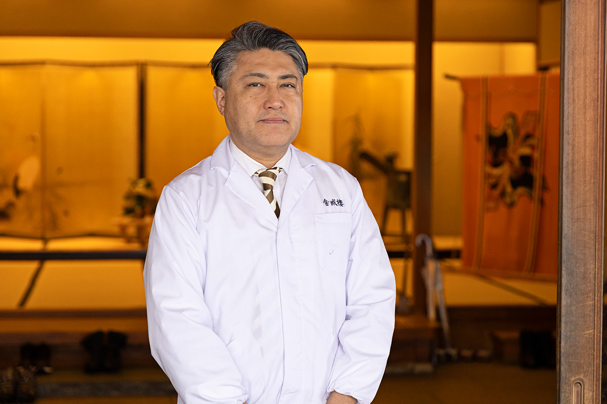
Самое известное блюдо кухни Кага это дзибу-ни: утка, сезонные овощи Кага и сударэ-фу, пшеничная клейковина с рельефом бамбуковой шторки, тушённые в сладковато-солёном соусе. Охота на птицу и право есть её были привилегией самураев, так что дзибу-ни по происхождению блюдо воинского сословия.
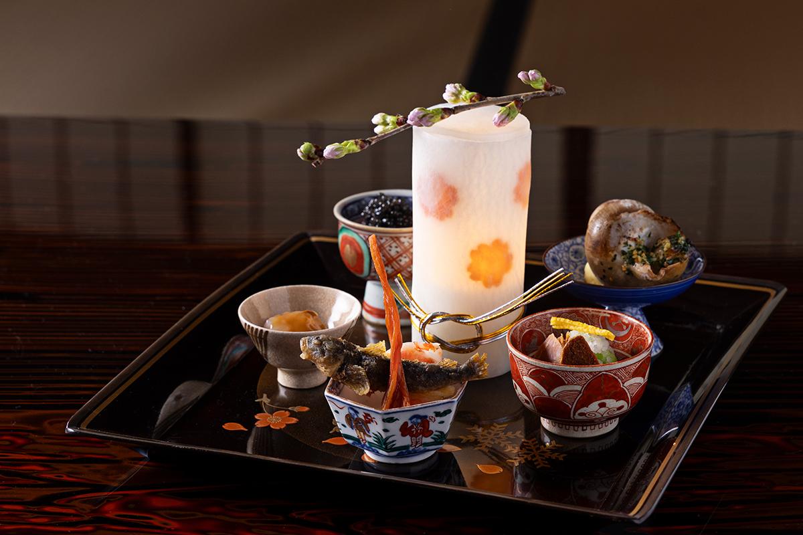
«Исикава близко и к морю, и к горам, свежих продуктов здесь очень много. Кухня Кага выигрывает и по «пищевым милям»: путь продуктов до стола короткий», говорит хозяин Asadaya.
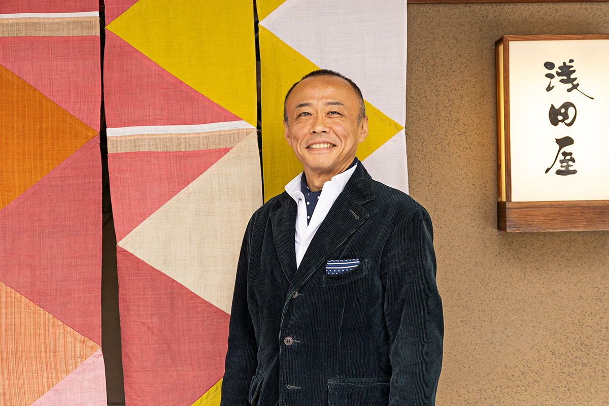
Даже в хассун, набор маленьких закусок, попадают блюда, в которых узнаётся местный край: речная рыбка гори или белые креветки из залива Тояма. Вкус, который любили хотё-самураи, жив и сегодня.
Посуда
Музей на столе
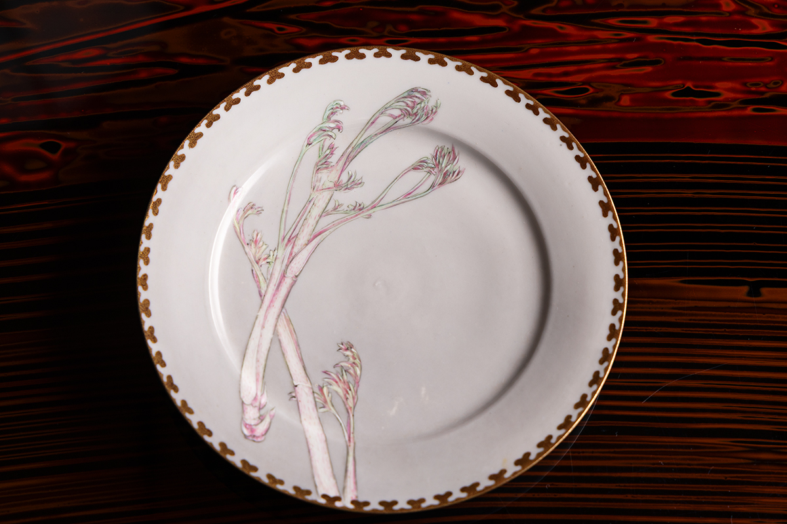
Насыщенной, глубокой еде форму придаёт посуда, которую в Исикаве делают до сих пор. Особое место занимает чаша лака Вадзима-нури: с годами её блеск смягчается, а поверхность становится тёплой и бархатистой. Подносы осики делают из лака Вадзима-нури или лака с росписью Кага-макиэ, тарелки и посуду для сакэ из Кутани-яки с пышной цветной росписью.
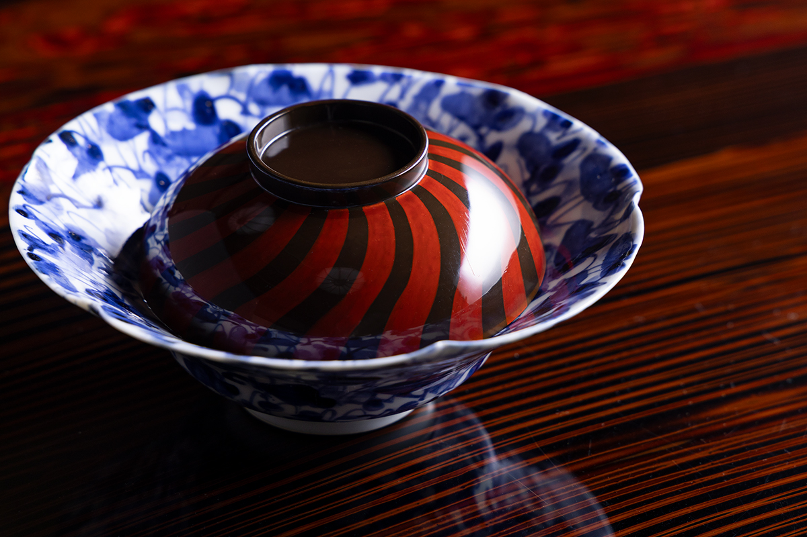
Всё, что стоит на столе, сделано в самой префектуре: такое возможно только в Исикаве, главном крае ремёсел Японии. В ход идут и вещи, которым больше ста лет. Неудивительно, что иностранный гость, потрясённый посудой, воскликнул: «Это музей, который можно съесть!» Старые шедевры стоит рассматривать не спеша.
Обстановка
Цвет стен и золотые ширмы
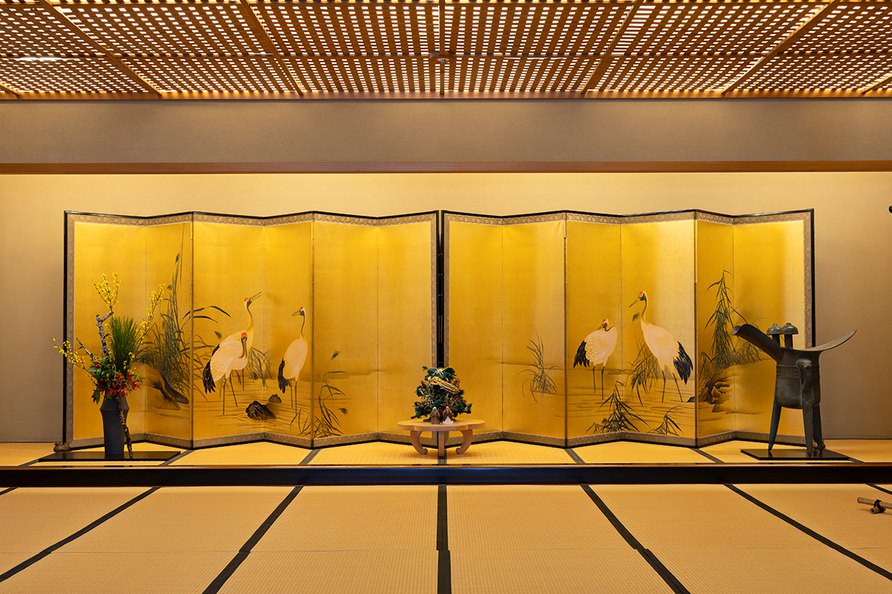
Гостеприимство начинается в ту минуту, когда гость переступает порог. Как и посуда, здание и убранство рётэя достойны музея. Величественная ширма сразу уводит из будней. Свиток и цветы в комнате меняют по временам года.
Своя история есть и у глиняных стен. Тёмно-синий ультрамарин считался благородным цветом, который был позволен только дому Маэда, поэтому в комнатах его избегали и красили стены в красный бэнгара и зелёный. Говорят, яркие стены появились и оттого, что ясных дней в этих краях мало. Присмотритесь к утвари: по ней видно и сезон, и ранг комнаты.
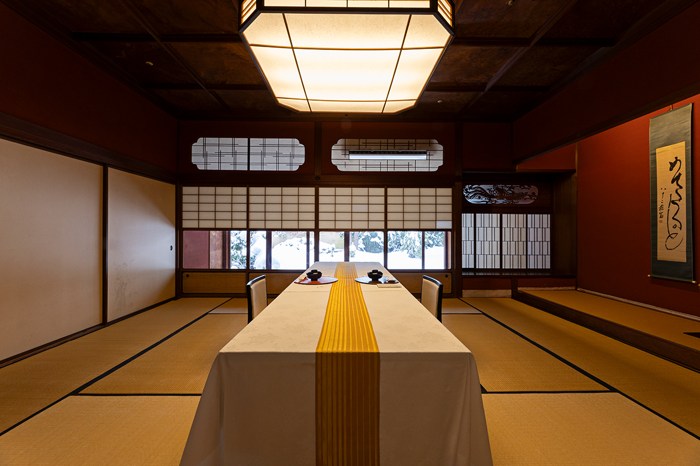
К этому добавляется обслуживание с мягкими, выверенными движениями, за которыми стоит культура чайной церемонии. Еда, ремесло и гостеприимство здесь слиты в один мир, и вечер в рётэе лучший способ узнать, что такое кухня Кага.
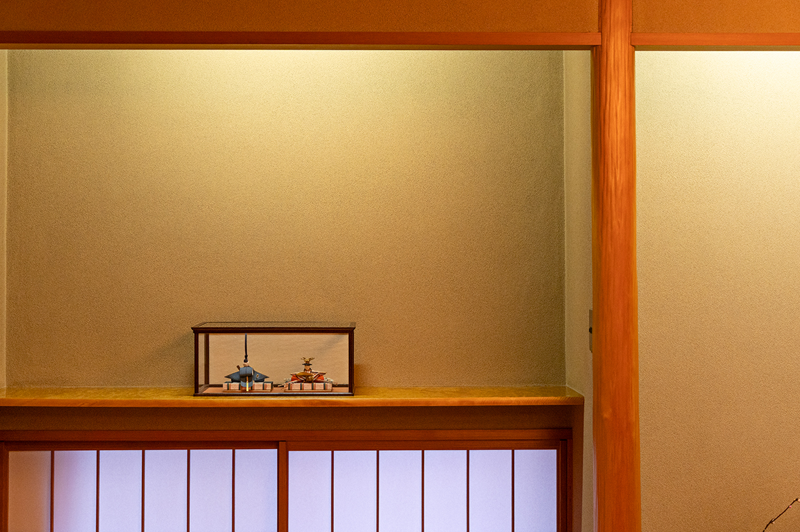
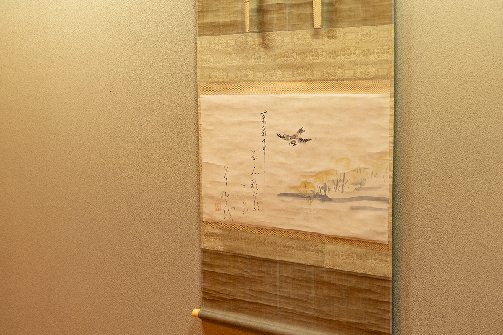
Где попробовать
Рётэи Канадзавы
Весной 2026 года проходил ежемесячный цикл «Кага-рёри о мэгуру кай»: блюда кухни Кага каждый месяц подавали в новом исполнении. Туристический сайт префектуры Исикава предлагал и отдельные программы, например обед в Tsubajin, самом старом рётэе Канадзавы, со специальной экскурсией.
Asadaya и Kinjohro принимают гостей и на ночь: можно не только поужинать, но и остаться до утра.
Asadaya
- Адрес
- префектура Исикава, Канадзава, Дзюккэн-мати, 23
- Телефон
- +81 76-231-2228
- Часы работы
- ресторан 17:30–22:00
- Выходные
- без выходных
- Номера
- 3
- Цены / Вход
- от 87 120 иен за ночь с ужином и завтраком (налог и обслуживание включены)
- Заезд / выезд
- 14:00 / 11:00
- Сайт
- asadaya.co.jp
Kinjohro
- Адрес
- префектура Исикава, Канадзава, Хасиба-мати, 2-23
- Телефон
- +81 76-221-8188
- Часы работы
- ресторан 11:00–13:30 и 17:00–19:30 (последний приём заказов)
- Выходные
- без выходных
- Номера
- 6
- Цены / Вход
- от 49 500 иен за ночь с ужином и завтраком (налог и обслуживание включены)
- Заезд / выезд
- 16:00 / 11:00
- Сайт
- kinjohro.co.jp
Фото: Норихито Судзуки.